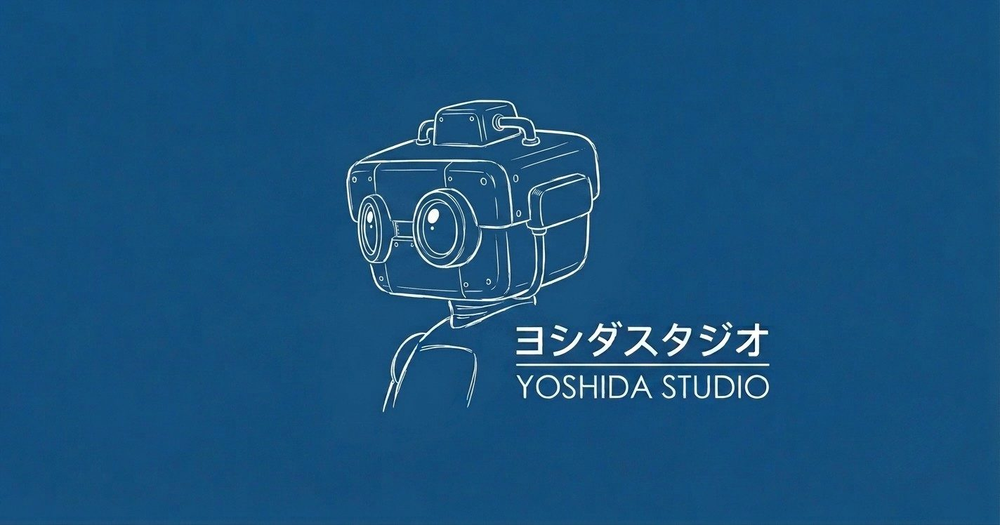

LINEスタンプ・絵文字、ブラウザゲーム、キャラクター、制作ツールなどの作品をまとめています。
LINEスタンプ・絵文字
LINE STORE で販売中のスタンプと絵文字の一覧。
見るブラウザゲーム
スマホのブラウザで遊べるミニゲーム。
見るキャラクターIP
ヨシダスタジオのキャラクターと、お借りしているキャラクターの紹介。
見るLINEスタンプ制作支援ツール
スタンプ制作に使っている自作ツール。
準備中note の最新記事
もっと見る →最新のショート
YouTube で見る →ヨシダスタジオについて
ヨシダスタジオは、LINEスタンプ・絵文字、スマホのブラウザで遊べるゲーム、オリジナルのキャラクターなどを作っています。作品は LINE STORE と、このサイトで公開しています。
制作の様子は、毎日 note の制作日記に書き、YouTube にショート動画を投稿しています。